COURS PYTHON AVANCé
Nomades Advanced Technologies
Automne 2021

Sergey Platonov
- Etudiant 3ème année HEPIA
- Ingénierie IT - Logiciels et Systèmes Complexes
- Expérience en Python: 5 ans
- HEPIA - langage de choix pour projets
- Projets personnels
- Pictet Group - solo projet R&D - 9 mois
- CCHE Architects - solo projet R&D - 1 année (en cours)
- 3ème année supervision projets IT à la Junior Entreprise HEPIA
- Intérêts
- Data Science
- Computer Vision
- Signal Processing
- Linear Programming (optimisation)
- Algorithmes Génétiques
Les buts de ce cours
- Parcourir ensemble les bases du langage Python3
- Apprendre à reflechir comme un dev Python
- Apprendre à structurer le code
- Prendre des bonnes habitudes lors du codage
- Concretiser les connaissances avec des exercices/projets
quelques infos pratiques:
- Appuyez sur 'O' pour ouvrir/fermer une vue d'ensemble sur tout le cours
- Télécharger le cours: git clone https://github.com/maganoegi/nomades_python_autumn_2021_public.git
- Mettre à jour: git pull origin master
Let's go learn Python
A quoi peut bien servir Python?
Python peut être utilisé pour:
- Serveur Back End
- Interfaçage avec d'autres logiciels, permettant construction et intégration des systèmes complexes
- Communication avec toutes types de bases de données
- Traîtement de Big Data
- Machine Learning
- Systèmes Embarqués
- en vrai... pour tout...
comment cette flexibilité est possible?
Python est un langage semi-interprété - source
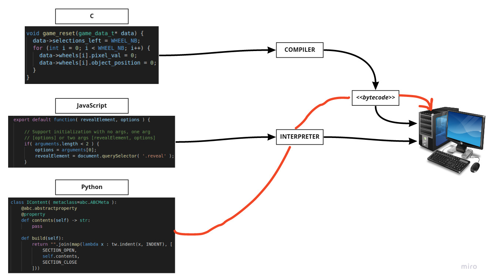comment marche-t-elle, cette compilation?
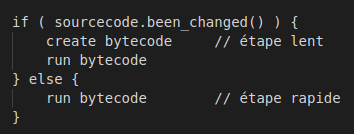- le bytecode est stocké dans __pycache__/
- cette "precompilation" est la raison pour laquelle Python a la reputation d'être "lent"
Environnements de travail
IDE vs Editeurs de texte
IDE - Integrated Development Environment
- Plus facile pour débuter
- Tout optimisé pour developper
- Necessite de l'apprentissage
- Debuggage peut être plus complex
- Trop de soutien - dépendance
Editeur de texte
- Facile à mettre en place
- Plus legers, flexibles
- Gestion de packages manuelle
- Prototypage plus façile
- Force à apprendre le syntaxe
IDE et Text Editor Examples
IDE
- PyCharm
- Jupyter Notebook
Editeur de Texte
- Visual Studio Code (VSCode)
- Sublime Text
- Atom
- Vim
Problèmes fréquents
- Même Projet - versions Python différentes
- Même Projet - versions packages différentes
- Packages intallés globalement - lourd
Nous allons utiliser Anaconda - toolkit parfait pour début
- gestion packages
- gestion environnements
- format unique pour ce cours
Anaconda Setup
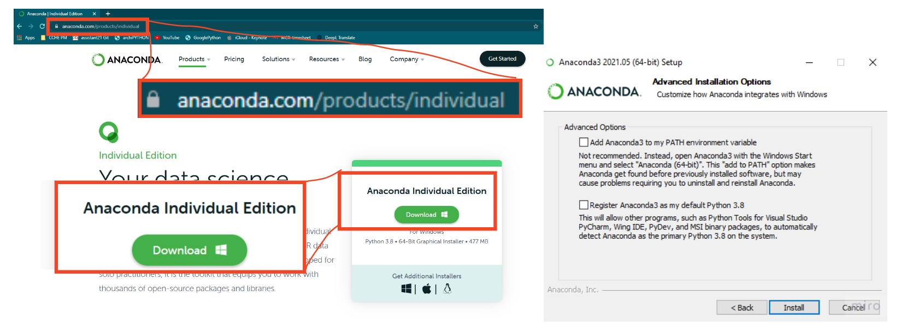Project Setup
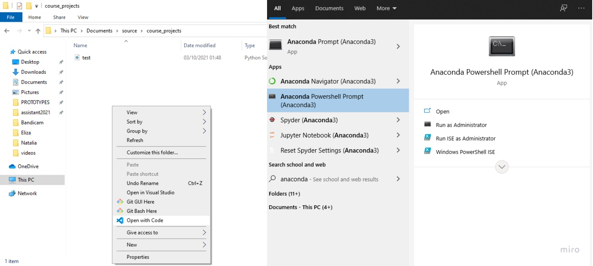Project Setup
Navigation interne (cd - cd .. - ls)
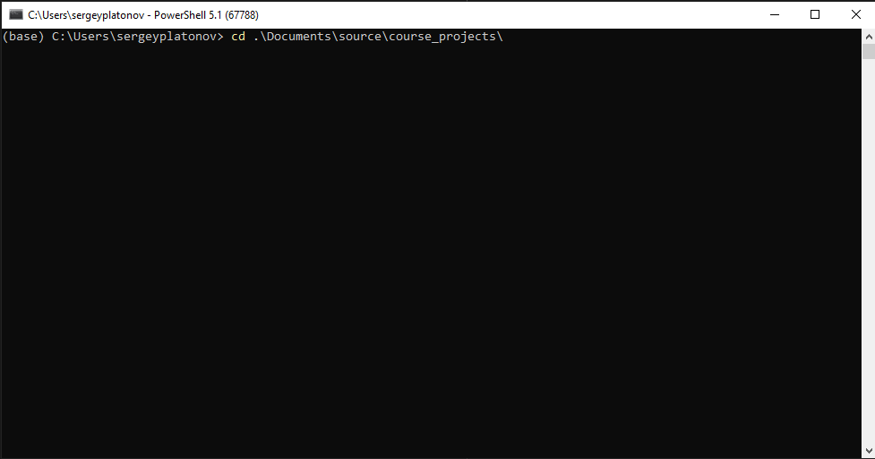Lister tous les environnements
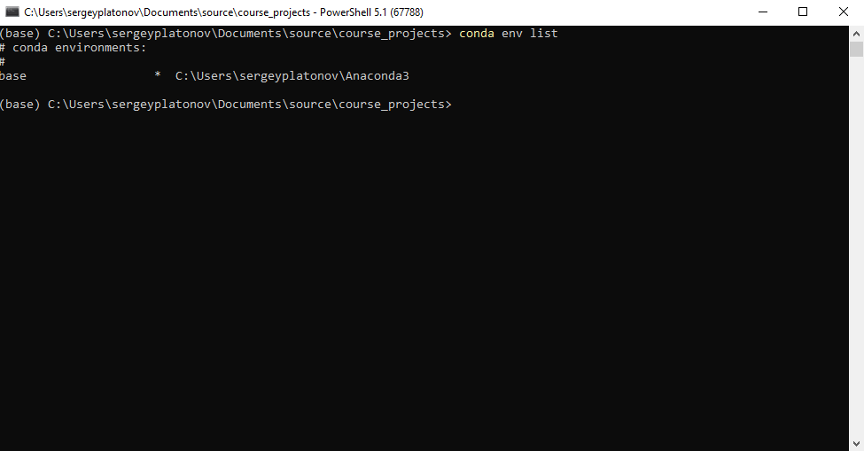Créer nouveau env
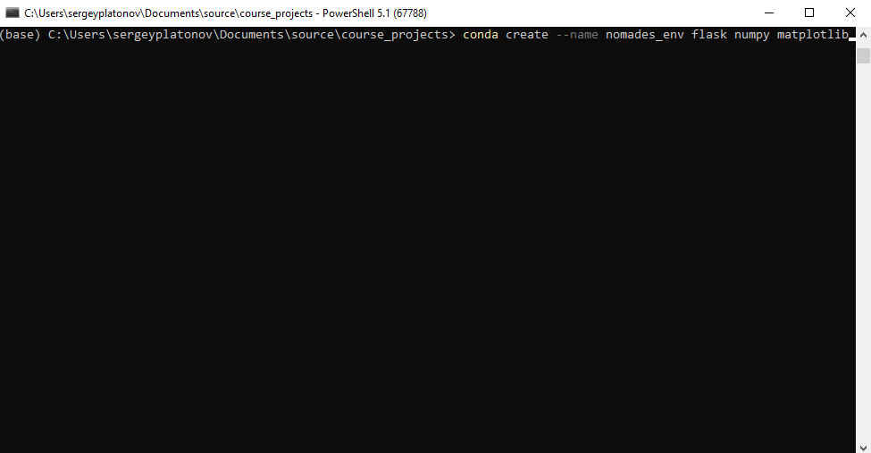Activer un env
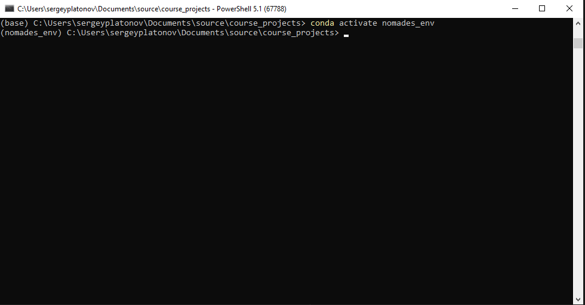Lister tous les packages du env
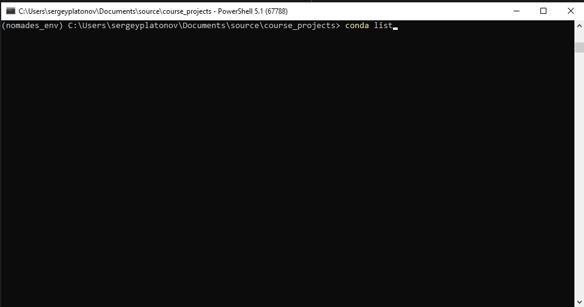tester Python
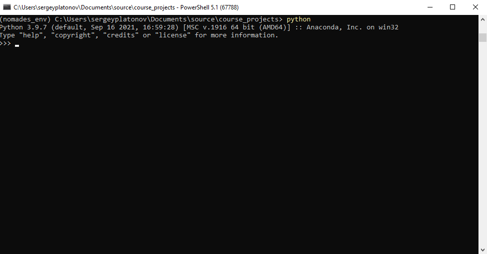deactiver le env courant
Workflow

VSCode plugins
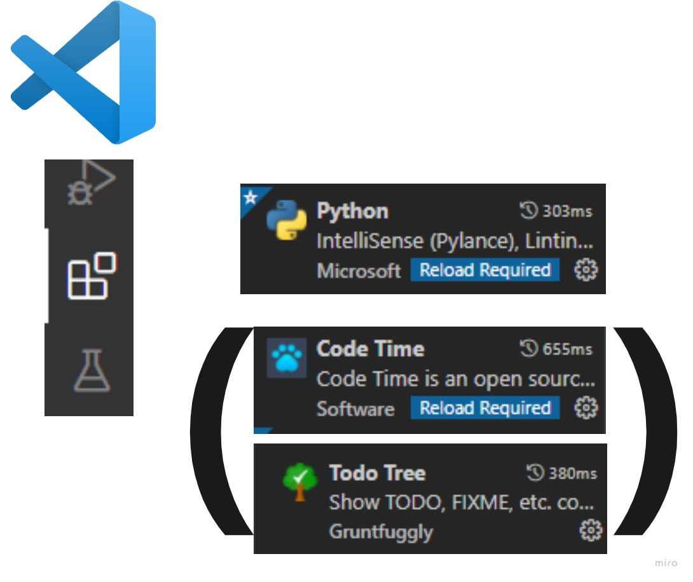Semantique
En Python, il n'y a pas d'accolades
# Pas d'accolades comme en JavaScript
# A la place - un DOUBLE POINT avec INDENTATION
def incrementer_de_1(x):
x += 1
return x
En Python, tout est un objet
x = 10
type(x)
>>> "int"
def func(x):
return x
type(func)
>>> "class"
class MyClass:
pass
type(MyClass)
>>> "type"
Ce qui rend Python tres flexible
def func(x):
return x
y = func
y(10)
>>> "10"
# donc notre fonction est considerée comme
# un "first-class citizen"
# nous ouvrant le chemin pour plein de choses utiles

par contre, il faut faire gaffe avec cette flexibilité!
- les objets sont de base MUTABLES
- debugger avec id() et type()
- les types sont inferés lors de l'execution
- source de bug ENORME
nous allons parler des bonnes pratiques en cours de route ;)
Il existe 2 types de commentaires...
# commentaires "de ligne"
"""
commentaires
en
bloc
"""
exemples
def weird_function(y):
"""quick explanation on what the function does.
A more elaborate explanation on what the function
does. Here the algorithms can be explained, as
well as other details. This type of comment
is called a DOCSTRING.
ARGS:
what arguments and types to expect
RETURNS:
what type and what that value represents
"""
# line comment to explain this step,
# if it's not clear
x = y + 1
# generally, AVOID OVER-COMMENTING:
# a variable/function name must speak for itself
return "".join(map(lambda x : tw.indent(x, INDENT), [
SECTION_OPEN,
self.contents,
SECTION_CLOSE
]))
Fonctions et Methodes
exemples
# ==================================================
# en Mathématiques: f(x) = x + 1
# en Python: f(x)
def f(x):
"""mot clé DEF designe une fonction.
Incremente de 1.
"""
x += 1
return x
# appel de fonction avec ARGUMENT POSITIONNEL:
>>> output = f(1)
2
def f(x):
"""mot clé DEF designe une fonction.
Incremente de 1.
"""
x += 1
return x
# appel de fonction sans argument réquis:
>>> output = f()
"TypeError: func() missing 1 required"
"positional argument: x"
def f(x):
"""mot clé DEF designe une fonction.
Incremente de 1.
"""
x += 1
return x
# appel de fonction avec ARGUMENT NOMME:
>>> output = f(x=2)
3
# fonction LAMBDA, sur une ligne
>>> l = lambda x : x + 1
>>> l(1)
2
# fonction avec nombre variable d'arguments
def sum_all(*args):
result = 0
for arg in args:
result += arg
return result
>>> output = sum_all(1, 2, 3, 4, 5, 6, 7, 8, 9)
45
# fonction avec somme variable des variables nommées
def format_greeting(**kwargs):
for key, value in kwargs.items():
print("My {0} is {1}".format(key, value))
>>> format_greeting(name="Sergey")
"My name is Sergey"
# ==================================================
Variables
- Nous permet de stocker des données de types différents
- n'ont pas de type - contiennent reference vers memoire
- doivent être affectées pour exister
- décision sur contenu au run-time
- notations et opérations:
- x += 1
- x -= 1
- x *= 1
- x **= 1
- x /= 1
- x //= 1
- x %= 1
Ceci nous permet d'avoir du typage dynamique
Les variables n'ont pas de type - il faut les voir comme un pointeur générique - source
Cependant...
les exemples d'avant étaient de type IMMUTABLE
le comportement des types MUTABLES est DIFFERENT !!source
plus besoin de créer un nouveau espace-mémoire - garde même pointeurs
- Mutables
- list
- dict
- set
- bytearray
- custom class
- Immutables
- numerical types
- string
- tuple
- frozen set
- bytes
toute une autre histoire pour les variables mutables.. - source
Duck Typing - source
"It's a duck if it walks like a duck and quacks like duck"
Typage dynamique est aussi rendu possible grace à "duck typing"
TOUT peut devenir TOUT tant qu'on suit la logique suivante:
- Pour utiliser une function -> besoin d'un canard
- Pour être un canard -> faut cancaner et marcher (pas très exigeant...)
- Du coup, faut implementer ces deux choses pour pouvoir participer.
- (en "quelque sort" similaire aux interfaces en JAVA...)
exemple conceptuel
class Duck:
def swim(self):
print("I can swim!")
def quack(self):
print("QUAAACK!")
class RoboticDuck:
def swim(self):
print("I can swim, but I will break...")
def quack(self):
print("execute Q.U.A.A.A.C.K protocol !")
class Fish:
def swim(self):
print("I can swim!!")
def check_if_duck(animal):
animal.quack()
animal.swim()
>>> check_if_duck( Duck() )
"QUAAACK!"
"I can swim!"
>>> check_if_duck( RoboticDuck() )
"execute Q.U.A.A.A.C.K protocol !"
"I can swim, but I will break..."
>>> check_if_duck( Fish() )
"AttributeError: 'Fish' object has no attribute 'quack'"
Il existe deux types d'évaluation en Python:
- strict (stricte)
- lazy (paresseuse)
Stricte calcule immédiatement le résultat sans reflechir
Paresseuse calcule que s'il le faut...
strict vs lazy evaluation
# evaluation stricte, rien d'intéressant...
x = 0
x += sum([1, 2])
class DataBaseManager:
...
# example de lazy eval ;) résultats en cache
@property
def all_user_accounts(self):
# do something insanely LONG and HORRIBLE...
return result
Structure du langage
Types numériques
int
long
float
complex
- x + y
- x - y
- x * y
- x / y
- x // y
- -x
- abs(x)
- int(x)
- float(x)
- complex(re, im)
- c.conjugate()
- pow(x, y)
- x**y
conversion de type - Casting
# conversion IMPLICITE
>>> x = 12 # int
>>> y = 1.0 # float
>>> type(x * y)
float
>>> type(x % y)
float
# Pourquoi?
>>> type("Hello World" + x)
TypeError
# conversion EXPLICITE
>>> x = 1.0
>>> y = int(x)
>>> type(y)
int
>>> str(x)
'1.0'
type string
# Ceci est un string...
>>> hello = "Hello"
>>> world = 'World'
# Strings peuvent subir des opérations...
>>> combined_string = hello + world
"HelloWorld"
# strings peuvent être formatées...
>>> formatted_string = f"{combined_string} misses a space..."
"HelloWorld misses a space..."
>>> list_of_strings = [
... "hello",
... "world"
... ]
>>> " ".join(list_of_strings).upper()
"hello world"
# strings peuvent être considerées comme des listes...
>>> first_char = formatted_string[0]
"H"
>>> len(first_char)
1
>>> 'Python' in formatted_string
False
# ... mais ils ont aussi des methodes propres...
>>> combined_string.upper()
'HELLOWORLD'
>>> combined_string.lower()
'helloworld'
>>> "hello world ".strip()
"hello world"
# les '' peuvent être utilisées à l'intérieur de ""
boolean et operateurs
# valeur booléenne
>>> lower = 12 # variable de type immutable...
>>> higher = 13
>>> lower < higher
True
>>> lower >= higher
False
>>> 12 == 12.0 # comparaison par reference...
True
>>> x = True
>>> y = False
>>> x and y
False
>>> x or y
True
>>> x ^ y # xor (or exclusif)
True
Listes
- collection clé du langage
- variable MUTABLE - ATTENTION BUGS
- iterable
- indexable
- plein de modes d'exploitation, car important!
Regardons les exemples pour commencer...
Listes - base
# initialisons une liste...
>>> lst = []
# ajoutons quelque chose...
>>> lst.append(12)
[12]
# et encore, mais de type different...
>>> lst.append("douze")
[12, "douze"]
# ATTENTION: ne faites jamais ça s'il vous plaît...
# et S'IL FAUT le faire, utilisez les TUPLES:
>>> t = (12, "douze")
# listes sont ITERABLES...
# donc on peut les parcourir par valeur
>>> for value in lst:
... print(value)
12
"douze"
# elles sont aussi indexables...
>>> lst[0]
12
# et on peut avoir des listes dans listes
>>> nested = [
... ["uno", "dos", "tres"],
... ["eins", "zwei", "polizei"],
... ["bonjour"]
... ]
>>> silly_phrase = [
... nested[2][0],
... nested[0][1],
... nested[1][2]
... ]
>>> " ".join(silly_phrase)
"bonjour dos polizei"
"=============="
Listes - avance
# SLICING - lst[start : stop : step]
>>> lst = [1, 2, 3, 4, 5, 6, 7, 8]
>>> lst[:]
[1, 2, 3, 4, 5, 6, 7, 8]
>>> lst[1:]
[2, 3, 4, 5, 6, 7, 8]
>>> lst[::-1] # debut à la fin avec un pas négatif
[8, 7, 6, 5, 4, 3, 2, 1]
>>> lst = "HWeolrllod"
>>> lst[::2] # pas de 2, commençant par index 0
"Hello"
>>> lst[1::2] # pas de 2, commençant par index 1
"World"
# prendre le dernier et avant-dernier element
# et additionner les deux
>>> lst = [1, 2, 3, 4, 5, 6, 7, 8]
>>> lst[-1] + lst[-2]
15
# recherche d'index...
>>> lst.index(3)
2
>>> lst.index(15)
ValueError
# Comprehension des Listes
# manière de composer des nouveaux listes
# a partir des "règles" et boucles FOR imbriquées.
# PLUS RAPIDE, "MEMORY SAFE", FACILE A LIRE
>>> lst = [0, 1, 2, 3, 4, 5, 6]
>>> lst_squared = [x**2 for x in lst]
# Qu'est-ce qu'il se passe?
# parcours de liste LST par valeur...
>>> lst_squared = [___ for x in lst]
# accès a la variable x dans le scope...
>>> lst_squared = [x___ for x in lst]
# elevation de la variable (valeur de lst) en carré
>>> lst_squared = [x**2 for x in lst]
# NOTE: les [] autour signifient qu'on construit une liste
# et non une dictionnaire -> ce serait alors des {}
# Fonctions sur des listes...
>>> lst = [0, 1, 2, 4, 5, 6, 3]
# tri
>>> sorted_list = sorted(lst)
# reverse
>>> rev_list = reversed(lst)
# la somme de tous les elements
# ATTENTION: marche que pour objets avec + defini...
>>> total = sum(lst)
Flux d'execution
def scream_the_type(number):
this_type = type(number)
if this_type == int:
print("THIS IS AN INT!!!")
elif this_type == float:
print("THIS IS A FLOAT")
else:
print("This is some other type.... might be a string?")
>>> scream_the_type("this is not a number")
"This is some other type.... might be a string?"
>>> x = 0
>>> result = []
>>> while x != 10:
... result.append(x)
... x += 1
>>> print(result)
[0, 1, 2, 3, 4, 5, 6, 7, 8, 9]
# pattern que l'on trouve dans du code materiel...
while True:
# do something
if stop_condition:
break
# pattern que l'on trouve dans du code analytique...
while condition:
if do_condition:
# do something
elif skip_condition:
continue
elif stop_condition:
break
else:
pass # do NOTHING
# boucle FOR - (quand nombre iterations connu)...
lst = [0, 1, 2, 3, 4, 5, 6, 7, 8, 9]
# parcourir une liste en longueur...
for i in range(len(lst)):
print(lst[i])
# range donne un ITERATEUR de 0 à 9
# mais vu que LIST est deja un ITERABLE...
# parcourir la liste par valeur...
for value in lst:
print(value)
# parcourir la liste avec indice et valeur...
for i, value in enumerate(lst):
print(f"value {value} at index {i}")
exemple - calculatrice
def ask_user_int(prompt):
result = None
while not result:
try:
result = int(input(prompt))
except:
print("Please provide an integer value")
continue
return result
def ask_user_op(prompt):
result = None
while not result:
raw = input(prompt)
if raw in ["*", "//", "-", "+", "/", "%"]:
result = raw
else:
print("Please select from the following values: \
* / // % + -")
continue
return result
def select_operation(op_str):
if op_str == "*":
return lambda x, y : x * y
elif op_str == "/":
return lambda x, y : x / y
elif op_str == "//":
return lambda x, y : x // y
elif op_str == "-":
return lambda x, y : x - y
elif op_str == "+":
return lambda x, y : x + y
else:
return lambda x, y : x % y
if __name__ == '__main__':
left = ask_user_int("First Number: ")
op_str = ask_user_op("Operation: ")
right = ask_user_int("Second Number: ")
operation = select_operation(op_str)
result = operation(left, right)
print(f"{left} {op_str} {right} = {result}")
Expression ternaire
# Expression "simple"...
age = 37
if age >= 18:
print("la personne est majeure")
else:
print("la personne est mineure")
# expression ternaire...
state = 'majeure' if age >= 18 else 'mineure'
print(f"la personne est {state}")
# Permet de faire un test rapide sur
# une condition simple...
Structures avancees
Tuples
# Tuples sont des objets IMMUTABLES
# Donc Memory-safe et plus rapides
>>> film = ("Good Will Hunting", "Robin Williams",
"Matt Damon", "Ben Affleck", 1997)
# les tuples sont ITERABLES et INDEXABLES
>>> film[0]
"Good Will Hunting"
# ... peuvent etre decomposées dans variables separees
name, actor1, actor2, actor3, year = film
# mais aussi mettre les parties dans des lists..
name, *actors, year = film
# quand une valeur ne nous importe pas...
name, *actors, _ = film
# quand une fonction retourne plusieurs valeurs,
# python les met dans un tuple.
name, *actors, _ = get_random_film()
# ====== TUPLES NOMMEES ======
>>> from collections import namedtuple
>>> Student = namedtuple("Student", [
"first_name",
"last_name",
"school"
])
>>> s1 = Student(
first_name="Sergey",
last_name="Platonov",
school="Nomades"
)
# tuples nommes nous permettent d'avoir:
# liaisons clé - valeur (comme dictionnaires)
# indexation et itération (comme lists)
# champs (comme classes)
# immutabilité (comme tuples)
# elles forment donc un type hyper versatil
Dictionnaires
# dictionnaires dont des structures
# de donnes avec les proprietés suivantes:
# jeux de clé-valeur
# garantie d'unicité de clés
# rapidité de lookup (voir hashtable)
>>> my_dict = {
"key_a" : "val_a",
"key_b" : "val_b",
"key_c" : "val_c",
}
# elles ne sont donc pas indexables ni iterables
# comme les tuples nommes.
# Leur but principal est d'assurer une valeur de clé
# unique...
>>> my_dict["key_c"]
"val_c"
# ajouter un nouveau item unique...
>>> my_dict["key_x"] = "val_x"
# ATTENTION:
# ajour d'élément avec le meme clé
# va overrride l'élément
>>> my_dict["key_a"] = "another a value"
# prendre tous les clés...
>>> my_dict.keys()
dict_keys(["key_a", "key_b", "key_c"])
# prendre tous les items...
>>> my_dict.items()
dict_items([("key_a", "val_a"), (...), (...)])
# prendre toutes les valeurs
>>> my_dict.values()
dict_values([..., ..., ...])
# les dictionaires peuvent être crées...
>>> my_dict = {
"key_a" : "val_a",
}
>>> my_dict = dict([("key_a", "val_a")])
>>> my_dict = dict(key_a="val_a", ...)
# mais aussi avec Dict Comprehensions...
>>> my_dict = {x : x**2 for x in (0, 1, 2, 3)}
{0: 0, 1: 1, 2: 4, 3: 9}
# parfois une valeur n'existe pas dans un dict...
>>> d = dict(a=1, b=2, c=3)
>>> d["d"]
KeyError: 'd'
# Il faut alors proposer une valeur par défaut.
>>> d = dict(a=1, b=2, c=3)
>>> d.get("d", "ma valeur par defaut")
"ma valeur par defaut"
Iterateurs
# pour des raisons de memoire et performance
# certaines fonctions retournent des ITERATEURS...
# appliquer my_func à chaque element dans la collection..
>>> map(my_func, [0, 1, 2, 3])
map object
# avoir un iterateur de 0 à 9...
>>> range(10)
range object
# filtrer les valeurs dans une collection...
>>> filter(lambda x : x % 2 == 0, [0, 1, 2, 3, 4, 5])
filter object
# Ces elements-là sont des iterateurs intermediaires
# qui nous permettent de les utiliser par la suite
# et enchainer des operations...
# Enchainement:
map(operation, iterator1, ..., iteratorN) -> iterator
>>> r = reversed(0, 1, 2, 3, 4)
>>> m = map(pow, r, range(10))
>>> list(m)
[1, 3, 4, 1, 0]
# EXEMPLE:
>>> def myfunc(a, b):
... return a + b
>>> m = map(myfunc, [0, 1, 2, 3])
>>> # PAS D'ERREUR!
>>> list(m)
TypeError: missing 1 required positional argument 'b'
# Donc on voit que MAP effectue uniquement les liens
# en preparant le contenu à la sortie...
# ceci est la definition d'un iterateur
# Le mapping devient "concret", quand:
>>> list(m)
# OU
>>> m.__next__()
# Les itérateurs importants:
map(func, *collections)
reversed(collection)
zip(*collections)
filter(predicate, collection)
# comme c'est des "recettes", on ne peut pas les
# comparer directement... il faut de la logique en plus
# par contre, quand on parcours un objet MAP
# on ne pourra plus l'utiliser...
>>> lst = [0, -1, -2, -3, -4]
>>> m = map(lambda x : abs(x), lst)
>>> list(m)
[0, 1, 2, 3, 4]
>>> list(m)
[]
# Pourquoi?
# C'est parce que l'objet map est aussi un GENERATEUR.
# L'optimisation lui permet de stocker les "recettes" de
# generation, mais on peut l'instantier qu'une fois.
# NOTE: tout generateur est aussi un iterateur.
Generators
# jusqu'à maintenant nous avons appellé les objets ayant ce
# comportement les ITERATEURS. Plus etre plus specifique, ils
# s'appellent des GENERATEURS et forment un sous-type des iterateurs.
# ITERATEURS:
# implementent les methodes __iter__() et __next__()
# on peut donc les parcourir
# GENERATEURS
# sont des iterateurs
# nous donnent le contrôle sur le mémoire
# grâce au mot-clé YIELD
def my_generator(n):
for i in range(1, n, 2):
yield i**3
>>> for i in my_generator(10):
... print(i)
1
27
125
343
729
# une autre manière de créer un generateur est avec une
# expression generatrice. Syntaxe est similaire à une
# comprehension de liste...
>>> gen = (i**3 for i in range(1, 10, 2))
generator object
>>> list(gen)
[1, 27, 125, 343, 729]
>>>list(gen)
[]
# Quand nous utilisons une fonction pour declarer un generateur
# nous reinitialisons ce dernier à chaque fois. # TODO length
# Si on le fait avec une expression - il sera epuisé.
>>> next(my_generator)
1
......
>>> next(my_generator)
729
>>> next(my_generator)
StopIteration error # A EVITER!
# le boucle for les capture de base, nous devons le faire nous-meme
Set & Set Theory
# d'après la théorie des ensembles en maths
# (SET THEORY), nous avons aussi le type set...
>>> my_set = {1, 2, 3, 4, 5}
# la particularité de ce type est l'unicité des valeurs
# ainsi que les caracteristiques se SET Theory:
>>> s1 = {1, 2, 3}
>>> s2 = {1, 2}
>>> s3 = {4, 5, 6}
>>> s2 <= s1
True # car s2 est un sous-ensemble de s1
>>> s2 <= s3
False # car s2 n'est pas un sous-ensemble de s3
Comment organiser son code?
Un module contient des elements que l'on veut inclure dans notre codebase:
- fonctions
- definitions
- classes
- constantes
il existent 2 types de modules:
- Custom modules - nos fichiers .py
- Built-in modules - les modules natifs, qui aident à developper
Modules
# importer un built-in module:
import random
>>> random.randint(0, 10)
8
# Importer custom module.
# DANS lib.py .....
def func():
pass
def other_func():
pass
# DANS __main__.py .....
import lib
>>> a = lib.func()
# Nous pouvons aussi importer la fonction elle-même...
from lib import other_func
>>> a = other_func()
# ainsi que la renommer...
import lib as thebestLIBever
# ou alors
from lib import other_func as the_best_f
# ATTENTION - bonne pratique:
# évitez d'importer la fonction - importez le module.
# rend les sources du code clair.
# quand vous renommez le module avec AS
# verifiez quels sont les noms standards
# pour ce module.
# Pour rendre des fonctions PRIVEES, ajoutez un _
def _private_function():
pass
Package
Un package est une collection de modules. On peut donc le considerer comme une librairie plus complète.
La structure du package (dossier) est simple:
- vos fichiers .py (modules)
- un fichier __init__.py (souvent vide) pour declaration
Structure d'un package - ici en bleu
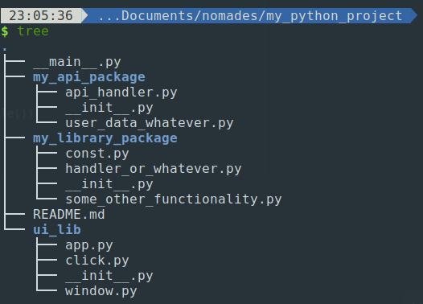Objets et Classes
Pourquoi utiliser classes?
- cacher l'implementation (abstraction)
- meilleure lisibilité de votre code
- portabilité
- extensibilité
- maintenabilité
- construction des comportements complexes
- expression des concepts plus abstraits/réels
quelle est la différence?
- Class - un "dessin" de l'objet
- Objet - une version crée à partir du "dessin"
Exemple pour commencer
class Person:
def __init__(self, fname: str, age: int):
"""CONSTRUCTEUR
Dicte comment un objet doit être construit.
self : mot clé designe appartenance à un objet
self._age : champ privé "_" propre à un objet
fname & age : deux valeurs à stocker"""
self._fname = fname
self._age = age
@property
def fname(self) -> str:
"""GETTER
self : mot clé designe appartenance à un objet
self._fname : champ privé "_" propre à un objet
@property : lazy-loading and readability"""
return self._fname
@property
def age(self) -> int:
return self._age
def __str__(self) -> str:
"""Built-in method override
vue que tout en python est un objet, ils
contiennent deja des comportements par défaut.
Il faut alors les "Override" - réecrire.
Là - le comportement de transformation en string.
self : mot clé designe appartenance à un objet"""
return f"Person(fname='{self.fname}', \
age='{self.age}')"
def __eq__(self, other: Person) -> bool:
"""Built-in method override
vue que tout en python est un objet, ils
contiennent deja des comportements par défaut.
Il faut alors les "Override" - réecrire.
Là - le comportement de comparaison.
self : mot clé designe appartenance à un objet"""
return (
self.fname == other.fname and
self.age == other.age
)
def say_hi(self) -> None:
"""Custom method, proper to the object (self)"""
print(f"Hi! my name is {self.fname}!")
@classmethod
def calculate_age_difference_between(
cls,
p1: Person,
p2: Person
):
"""CLASS METHOD
methode qui n'apartient à aucun objet.
mais plutot a des classes.
au lieu de self, contient CLS comme argument.
"""
return abs(p1.age - p2.age)
if __name__ == '__main__':
mike = Person("Mike", 27)
anna = Person(age=25, fname="Anna")
mike.say_hi()
anna.say_hi()
age_diff = Person.calculate_age_difference_between(mike, anna)
3 piliers de la programmation orienté objet:
-
Encapsulation - cacher des détails d'implémentation
- champs privés - cohérence
- on choisit quelles fonctionnalités nous exposons
-
Héritage - Promouvoir réutilisation code.
- Même si mauvaise pratique en général (faut pas abuser avec)
- Utile pour creer familles et hierarchies...
- Polymorphisme - Même objet peut prendre plusieurs formes
Heritage
- Nous permet de "generaliser" des traits/comportements
- Crée un lien très fort entre des entités
- faut faire attention lors de conception
- prioritisez la composition! (prochain cours)